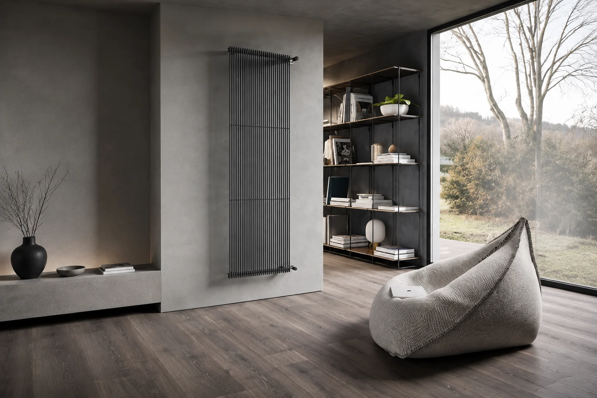
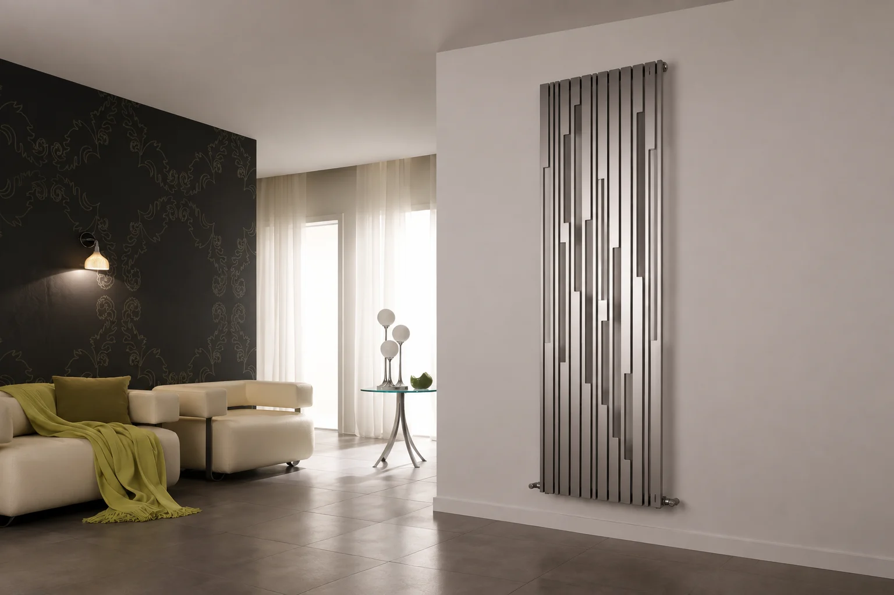
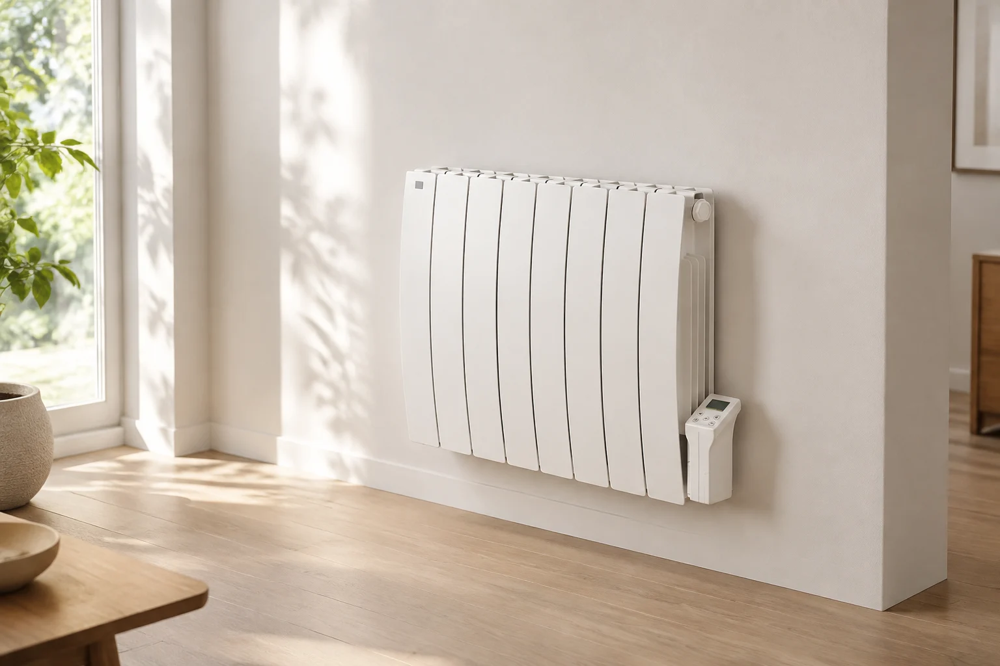

Impianti su misura
La nostra azienda vanta un'ampia scelta di impianti termoidraulici. Offriamo soluzioni di trattamento aria e acqua, e ci occupiamo della sostituzione di radiatori, rubinetterie e sanitari per il bagno o la cucina.
Realizziamo installazioni di impianti termoidraulici su misura, con attenzione a efficienza, risparmio energetico e affidabilità nel tempo.
Radiatori e termoarredo
Scegliamo i radiatori in base agli ambienti e all'impianto esistente. Tra le soluzioni disponibili ci sono radiatori tradizionali, termoarredi ed elementi elettrici.
Termoarredo
I termoarredi uniscono riscaldamento e design: forme, dimensioni e finiture si possono abbinare allo stile della casa.






Radiatori elettrici
Radiatori e scaldasalviette elettrici funzionano senza collegamento al circuito dell'acqua di riscaldamento. Potenza, tempi di utilizzo e consumi vanno valutati in base all'ambiente.



Battiscopa radiante
Distribuisce il calore lungo la parte bassa delle pareti, combinando convezione e irraggiamento. La resa e i consumi dipendono dal dimensionamento, dall'isolamento e dalle temperature di esercizio.

Rubinetterie e sanitari
Rubinetteria e sanitari sono elementi essenziali per l'arredo del bagno e non solo. Se scelti correttamente aiutano a ridurre l'impatto sulla bolletta e a consumare meno acqua, un bene prezioso.


Per sostituire un rubinetto da incasso in doccia o in vasca occorre verificare il corpo installato e la compatibilità dei ricambi. In alcuni casi si possono evitare opere murarie; in altri è necessario intervenire sul rivestimento. Valutiamo gli attacchi esistenti prima di proporti la soluzione.